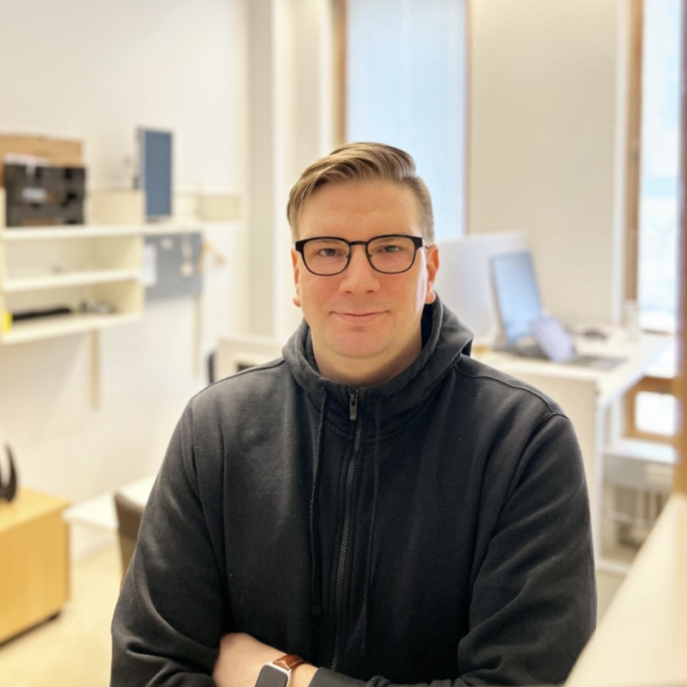

I'm a language technology researcher working on language understanding and reasoning
Learn more
I work as a Lead AI Scientist at Silo AI. I'm also a Visiting Scholar in Language Technology at University of Helsinki. I have almost 20 years of experience in research, software engineering, consulting and leadership.
My research focuses on natural language understanding, reasoning and natural language inference using machine learning. I’m interested in what understanding language consists of, how it can be modelled in AI and how these models can be evaluated.
My research focuses on reasoning and natural language inference. I have developed new methods and models as well as studied the limitations of various benchmarks and datasets in NLU.
I have done research in speech processing, including automatic speech recognition and prosody. I've developed speech recognition models used in production by thousands of end users.
I have developed machine translation models and state-of-the-art neural machine translation systems used in production by thousands of end users.